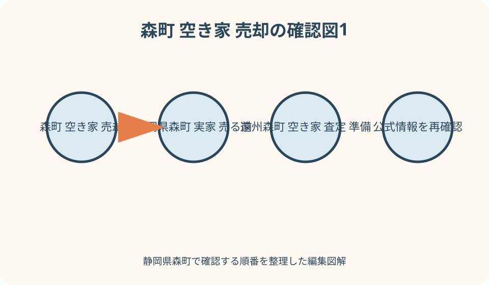
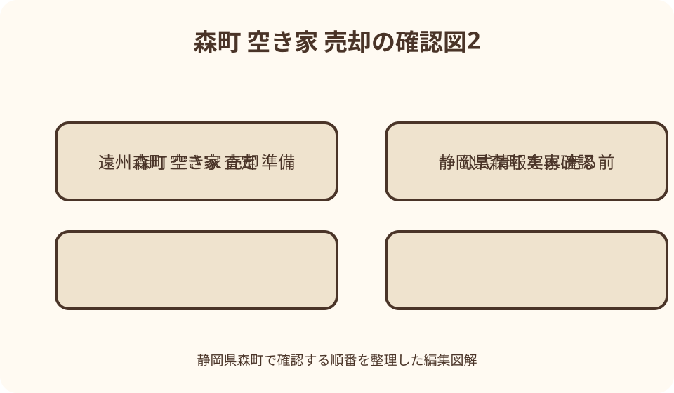

空き家・実家の整理｜最終確認 2026-08-10
静岡県森町の空き家・実家を売却する前の整理｜名義・境界・家財の確認順
静岡県森町の空き家や実家を売る前に必要なのは、急いで家財を捨てることでも、査定額を一つ得ることでもありません。最初に土地と建物の登記名義、相続の経過、売却へ同意できる人を確認し、次に境界・接道・農地・附属建物、残置物、雨漏りや設備停止などの現況を一冊へ集めます。森町の空き家・空き地バンクは情報を登録・公開する制度で、一般の仲介や買取と役割が異なります。片付け、補助申請、修繕、測量、解体を先に発注せず、誰の権限で何を行い、売却方法を問わず残る資料は何かを確かめます。

編集イラスト売却準備は価格より対象物の特定から
実家の住所一つでも、宅地、畑、山林、進入路、離れ、倉庫など複数の不動産が関係する場合があります。家だけを対象と思い込まないようにします。
固定資産税の通知、権利証または登記識別情報、売買契約書、建築図面、過去の測量資料を探し、資料名と作成日を一覧にします。
税の通知に載る対象と、登記されている対象、実際に使用している範囲は一致するとは限りません。三つを別欄で管理します。
資料が見つからないことは売れないという結論ではありません。紛失した資料と未取得の資料を分け、代わりに何を取得できるか相談します。
土地と建物の登記名義を別々に確認する
土地と建物には別の登記記録があります。実家の建物が親名義でも、敷地が祖父母、共有者、第三者名義という場合を想定します。
登記事項証明書では所在、地番、地目、地積、家屋番号、種類、構造、床面積、所有者、抵当権等を対象ごとに読みます。
住居表示や郵便住所は地番とは限りません。法務局で資料を請求する時は、公図、固定資産資料、過去の契約書で対象を特定します。
住宅ローンを完済していても、登記上の担保がどうなっているかは別に確認します。金融機関の古い書類だけで抹消済みと判断しません。
相続した人と売却に関わる人を整理する
亡くなった人の名義が残る場合、相続があっても登記名義は自動で変わりません。法務省は2024年4月1日から相続登記の申請義務化を案内しています。
義務の期限や必要書類は、相続を知った時期、遺産分割、過去の相続などで確認事項が変わります。自分の事案を公式案内と専門家へ示します。
遺言書、戸籍、法定相続情報一覧図、遺産分割協議書、相続放棄に関する書類など、存在の有無と保管者を家族表へ記します。
きょうだいの一人が鍵と税負担を担っていても、その人だけが売主になれるとは限りません。登記と相続関係から契約当事者を確認します。

所有不動産の見落としを防ぐ
実家のほかに、細い進入路、離れた畑、山林、墓地に近い土地などが故人名義で残ることがあります。家族の記憶だけで全件とはしません。
法務省は2026年2月2日開始の所有不動産記録証明制度を案内しています。利用対象、請求方法、検索仕様を確認し、登記漏れを探す資料の一つにします。
この証明も、未登記建物や記録の表記差を自動的に解消するものとは考えません。固定資産資料と現地の建物を併せて確認します。
対象一覧には『売る』『残す』『用途不明』『要調査』を付けます。査定依頼の前に売却範囲を一つに決められなくても構いません。
未登記・増築・附属建物を現地で拾う
母屋のほか、離れ、物置、車庫、作業小屋、茶関連の施設など、現地にある建物を位置図へ書きます。登記記録との対応を確認します。
増築された部屋や撤去済み建物が登記へ反映されていない可能性もあります。床面積の違いを自己流で修正せず、土地家屋調査士等へ相談します。
附属建物を残すか、片付けるか、解体するかで、費用だけでなく契約範囲と引渡し条件が変わります。査定前に勝手に消しません。
建築確認、検査、設計図、工事請負、修繕記録が残っていれば年代順に並べます。書類がない部分は『不明』と明示します。
境界資料は現地写真と対にする
公図、地積測量図、境界確認書、現況測量図があるかを調べます。同じ『図面』でも目的と精度、作成時点が異なります。
現地では境界標、塀、擁壁、側溝、樹木、屋根、配管を安全な範囲で撮影し、どの方向から撮ったか図へ番号を振ります。
境界標が一部見つからない、塀と図面がずれる、隣地の物が越えて見える時は、相手方へ直接結論を迫らず専門家へ資料を渡します。
売却時にどの範囲の測量・境界明示を行うか、誰が費用を負担するかは取引条件です。査定額だけの比較から落とさないようにします。

接道と進入路は利用実態だけで判断しない
実家へ車で入れる道が、公道、私道、通路、他人地の一部のどれに当たるかを調べます。長年通れた事実だけで権利を断定しません。
道路の種別、幅員、敷地との接し方、私道持分、通行・掘削の扱い、側溝管理を、森町の担当窓口と専門家へ確認します。
狭い道や橋、急坂では、引越し、家財搬出、解体、消防車、工事車両が入れるかも現実的な条件です。現地で転回場所を見ます。
建て替えられるかという問いは個別の法令・道路条件に関わります。不動産広告や近隣の建築例から可否を決めません。
農地・山林・庭を住宅と一括しない
実家の裏畑や茶畑が登記上の農地なら、住宅敷地と同じ売買手順ではない場合があります。地目と現況、耕作者、貸借を確認します。
森町公式は空き家付き農地の取得について相談窓口と許可要件を案内しています。下限面積撤廃を、誰でも無条件で取得できる意味に変えません。
山林は境界、林道、立木、伐採、災害、管理の確認が加わります。住宅とまとめて査定しても、契約対象は筆ごとに明確にします。
庭木、竹、石、井戸、祠、物干し、農機具などは、土地の一部か残置物かを決めにくい場合があります。処分前に写真と所有者確認を残します。
鍵と管理者を一枚にまとめる
玄関、勝手口、倉庫、車庫、門、郵便受けの鍵を分け、複製数と保管者を記します。鍵へ住所を直接書かないようにします。
電気、水道、ガス、電話、通信、浄化槽、火災保険、警備、自治会、庭管理の契約名義と連絡先を確認します。
遠方家族、近隣親族、管理事業者のうち、誰が換気、通水、草刈り、郵便、台風後点検を担っているか頻度とともに記録します。
売却相談を始めても引渡しまでは所有者側の管理が続きます。施錠、漏水、倒木、害虫、不法投棄への対応を止めません。
家財と残置物を四分類する
家の中の物を『家族が持ち出す』『買主と相談』『処分候補』『所有者不明』へ分けます。最初からすべてを廃棄対象にしません。
通帳、印鑑、権利書、保険証券、契約書、写真、手紙、位牌、貴金属、借用品は、一般家財から外して家族確認箱へ移します。
大型家具、家電、農機具、薬品、燃料、消火器、ガス容器、塗料は処分先や収集条件が異なります。町のごみ案内と事業者へ確認します。
親族の品を一人の判断で処分すると、売却とは別の家族問題になります。期限を決め、写真台帳を共有して承認者を残します。
残置物処分の補助は発注前に確認する
森町は、空き家・空き地バンクへ登録可能な物件を対象とする残置物処分や改修の補助案内を公開しています。
対象者、対象物件、対象経費、町内事業者、申請時期、予算などには条件があります。売却予定なら自動的に対象になるとは限りません。
補助を考える場合、契約や着手の前に最新の要綱・申請書・受付状況を担当課へ確認します。先に処分した費用が認められると期待しません。
補助対象外でも、分別、搬出、清掃、保管、買取の見積を分けると比較できます。金額だけでなく処分方法と許可も確認します。
建物状況は隠さず未確認も記録する
雨漏り、白蟻、傾き、腐食、漏水、排水詰まり、停電、設備故障、火災、浸水、修繕の記憶を家族から時系列で集めます。
見たことがない床下や屋根裏を『問題なし』にしません。確認できた範囲、確認日、立会者、停止中の設備を記します。
国土交通省は既存住宅の建物状況調査に関する手引きを公開しています。この調査は不具合が一切ないことを保証するものではありません。
調査を行うか、いつ行うか、費用を誰が負担するかは売却方法と建物状態で相談します。依頼前に調査範囲と報告書の使い方を確認します。
水道・排水・電気は停止状態まで伝える
上水道、井戸、簡易な給水設備のどれか、メーターと引込位置、最終使用時期、漏水の有無を確認します。通水試験を無断で行いません。
排水は公共下水道、浄化槽、くみ取り等を区別し、点検・清掃・検査記録、放流先、休止中の扱いを調べます。
電気の契約を止めた家では、照明やポンプ、給湯、シャッター、浄化槽機器をその場で確認できない場合があります。未確認設備を一覧にします。
査定や内覧のために再開する契約が必要かは、管理費と安全を含めて事業者へ相談します。再開すれば正常に動くとは保証しません。
空き家バンクと一般売却を分けて比べる
森町の空き家・空き地バンクは、所有者の登録情報を利用希望者へ提供する仕組みです。町が物件を買い取る制度ではありません。
町公式では、見学、交渉、契約は希望者と所有者双方で行い、町は交渉や契約を行わないと案内しています。宅建業者へ仲介依頼もできます。
一般仲介は事業者へ媒介を依頼し、市場で買主を探す方法です。買取は事業者が買主となる方法で、契約相手と条件が異なります。
どの方法も売却時期や成立を保証しません。対象物、現況、測量、片付け、修繕、広告、内覧、報酬、解除の条件を同じ表で比べます。
空き家バンク登録前のチェックを生かす
森町のバンク案内は登録申込書、同意書、チェックリストの提出を示しています。チェック項目は一般売却の準備にも役立ちます。
町公式のチェックリストには、水源、排水、雨漏り、白蟻、構造、接道、災害区域、所有、登記、境界などの確認欄があります。
チェック済みという印を品質保証へ読み替えません。所有者が把握する範囲と、専門調査で判明した事実を別にします。
土地と建物の所有者が異なる場合、町は土地所有者の同意書が必要と案内しています。最初の名義確認がここでも効きます。
査定前資料を一物件一冊にする
査定依頼用ファイルの表紙に、住所、地番、家屋番号、名義人、連絡代表者、鍵保管者、希望する売却範囲を書きます。
中には登記、固定資産資料、公図、測量図、建築図、修繕履歴、設備一覧、家財台帳、写真、保険、管理記録を目次順に入れます。
原本を渡す時は資料名、部数、受取者、返却予定を記録します。相談の初期は写しを使い、権利証等を無造作に郵送しません。
未確認事項一覧には、誰へ、何を、いつまでに聞くかを付けます。資料の多さより、分かることと分からないことが区別されている方が有用です。
査定条件をそろえて説明を聞く
複数の査定を比べるなら、土地建物の範囲、現況引渡し、家財、測量、修繕、解体、引渡し希望時期を同じ条件にします。
提示額には根拠、想定する売却方法、広告期間、費用、値直しの考え方を質問します。高い数字だけを契約成立の予告と受け取りません。
机上査定と訪問査定は確認範囲が異なります。現地を見ていない回答へ、道路や建物状態まで反映済みだと期待しません。
媒介契約の種類、期間、報告、広告、他社への依頼、報酬、解約を説明書で確認します。理解できない部分を数字で隠さないようにします。
税と費用は契約前に個別確認する
売却には仲介、登記、測量、片付け、解体、修繕、保険、税などが関わる場合があります。必要性と負担者は一件ごとに違います。
空き家や低未利用土地に関する税の制度が紹介されることがありますが、対象期間、相続、建物、売却先等の要件を満たすかは個別確認です。
町が交付する確認書があっても、税の適用を町が最終判断するとは限りません。税務署や税理士へ契約前に資料を示します。
手取り額を固定式で保証せず、売買代金、控除される費用、納付時期、保有継続費を複数の条件で試算します。
専門家は問題ごとに選ぶ
売却方法と媒介は宅地建物取引業者、相続・所有権登記は司法書士、境界・測量・表示登記は土地家屋調査士が相談候補です。
建物状態や改修は建築士・施工事業者、税は税理士または税務署、相続争いや契約上の対立は弁護士等へ相談する場面があります。
農地は森町農業委員会、道路・建築・上下水道はそれぞれの町担当、空き家バンクは定住推進課へ対象資料を持って聞きます。
一人の相談者にすべての法的判断を求めません。相談メモに回答者の資格、対象資料、回答日、次の確認先を残します。
図解1：実家カルテを四つの箱で作る
一箱目は人です。登記名義人、相続人候補、共有者、鍵保管者、費用負担者、家族の連絡代表を分けます。
二箱目は土地です。地番、地目、境界、接道、農地、山林、擁壁、埋設物、上下水道を資料名とともに記します。
三箱目は建物です。家屋番号、増築、附属建物、不具合、設備、修繕、保険、鍵、停止中の契約を集めます。
四箱目は物と判断です。家財、残置物、写真、処分承認、売る・貸す・保有の家族意向、相談履歴を日付順に残します。
図解2：査定依頼までの停止線を置く
第一の停止線は名義です。売却対象と契約当事者が分からなければ、相続・登記の相談を先にします。
第二の停止線は土地です。境界、接道、農地、附属地が不明なら、現地写真と図面をそろえて調査範囲を決めます。
第三の停止線は物です。誰の家財か分からない、危険物がある、搬出経路がない時は処分契約を急ぎません。
三つを越えた後で、同じ物件資料をバンク担当と一般の事業者へ示します。回答条件が異なれば、額ではなく前提から比べます。
良い点：整理は売らない選択にも残る
名義、鍵、境界、設備、家財を集めた実家カルテは、売却を中止しても管理、修繕、賃貸、家族利用、相続準備に使えます。
森町には空き家・空き地バンクという町の情報入口があり、一般流通以外の相談経路を比較できます。登録条件の確認が整理の機会になります。
町のチェックリストは所有者が見落としやすい水、排水、災害、接道、登記を一度に見直す材料です。未確認を発見するために使えます。
写真と管理日誌があると、遠方家族も現状を共有できます。記憶だけの話合いから、資料を見て決める話合いへ移れます。
注文したい点：片付けと修繕を先走らない
見栄えを良くしようと、家族確認前に家財を全処分すると、重要書類、借用品、思い出、建物の説明材料まで失う場合があります。
修繕すれば必ず高く売れるとは限りません。直す範囲、買主像、費用回収を保証せず、現況での提案と比較します。
境界や登記の相違を隠して査定を急ぐと、後で説明条件が変わります。不利に見える情報ほど確認日と根拠を付けます。
空き家バンクへの登録を、成約・価格・安全の保証にしません。町が行う情報提供と、当事者が担う交渉・契約を分けます。
代案・結論：今すぐ売らずに管理線を引く
相続や境界が整理できない時は、売却だけを保留し、施錠、保険、草木、漏水、郵便、台風後点検の担当を決めます。
家財の合意に時間がかかるなら、重要品を別保管し、残りを部屋単位で封印・撮影します。処分期限を家族へ共有します。
建物を残す負担が大きければ、現況売却、片付け後、解体後、賃貸、保有継続を条件表で比べます。どの案も成功を約束しません。
今日の結論は、固定資産資料と鍵を集め、土地・建物・人・物の四覧を作ることです。査定依頼はその後でも遅くありません。
家族に残す記録は判断理由まで書く
実家カルテには住所だけでなく地番、家屋番号、名義、相続資料、境界図、道路、農地、鍵、契約先、緊急連絡先を記します。
家財を残した理由、測量を見送った理由、修繕しなかった範囲など、未実施の判断も日付と参加者を添えて残します。
相談先から受けた説明は、確定事項、見解、追加調査、期限へ分けます。家族の希望を専門家の判断として記録しません。
原本保管場所とデジタル写しの管理者を決めます。個人情報を含む戸籍、登記識別情報、鍵写真を無制限の共有先へ置きません。
大石の視点：査定額より説明できる家にする
小さな不動産実務では、最初の現地確認で玄関へ急がず、進入路、側溝、境界、擁壁、庭木、附属建物、水の跡を外周から見ます。
私は、売ると決めていない段階ほど資料整理に意味があると考えます。名義や家財が見えれば、家族は急かされずに選べます。
不具合を隠さず、分からないことを分からないまま記録する方が、次の調査を具体化できます。きれいな説明より追跡できる説明を優先します。
森町の家には、住宅だけでなく農地、山、祭具、仕事道具、近所との管理関係が重なることがあります。売買対象と暮らしの記憶を丁寧に分けます。
まとめ：売却前整理の順番を守る
空き家売却の準備は、対象不動産、登記名義、相続関係を確かめることから始まります。家財処分や修繕を第一歩にしません。
続いて境界、接道、農地、附属建物、設備、建物状況、管理履歴を集め、確認できない部分を査定先へ同じ条件で伝えます。
空き家バンク、一般仲介、買取、保有継続は役割と条件が違います。価格、時期、税、成約をこの記事から保証しません。
一冊の実家カルテと未確認一覧を作り、町、法務局、各専門家へ論点を分けて相談することが、家族の判断を支える現実的な入口です。
公式情報・確認先
掲載内容は次の一次情報を基礎に整理しました。営業、料金、催し、交通は変わるため、出発前または手続き前にリンク先で最新情報を確認してください。
- 森町空き家・空き地バンク（静岡県森町、2026-08-10確認）
- 森町空き家等利活用推進支援費用補助金（静岡県森町、2026-08-10確認）
- 森町空き家付き農地の取得について（静岡県森町、2026-08-10確認）
- 第2期森町空家等対策計画（静岡県森町、2026-08-10確認）
- 法務省所有不動産記録証明制度（www.moj.go.jp、2026-08-10確認）
- 法務局登記申請を検討する方への案内（houmukyoku.moj.go.jp、2026-08-10確認）
- 国土交通省既存住宅流通・建物状況調査（www.mlit.go.jp、2026-08-10確認）
- 国土交通省空家等関連情報（www.mlit.go.jp、2026-08-10確認）